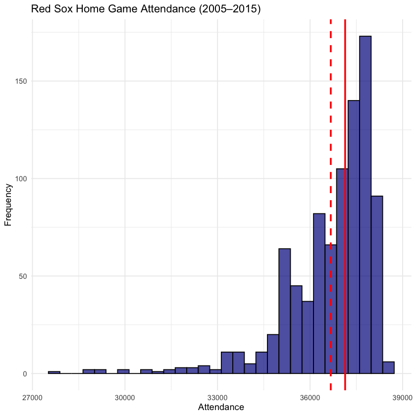
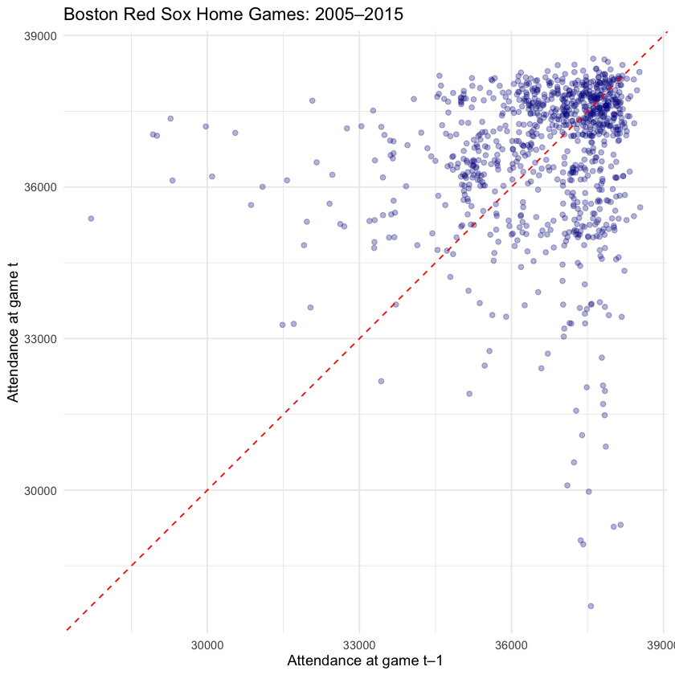
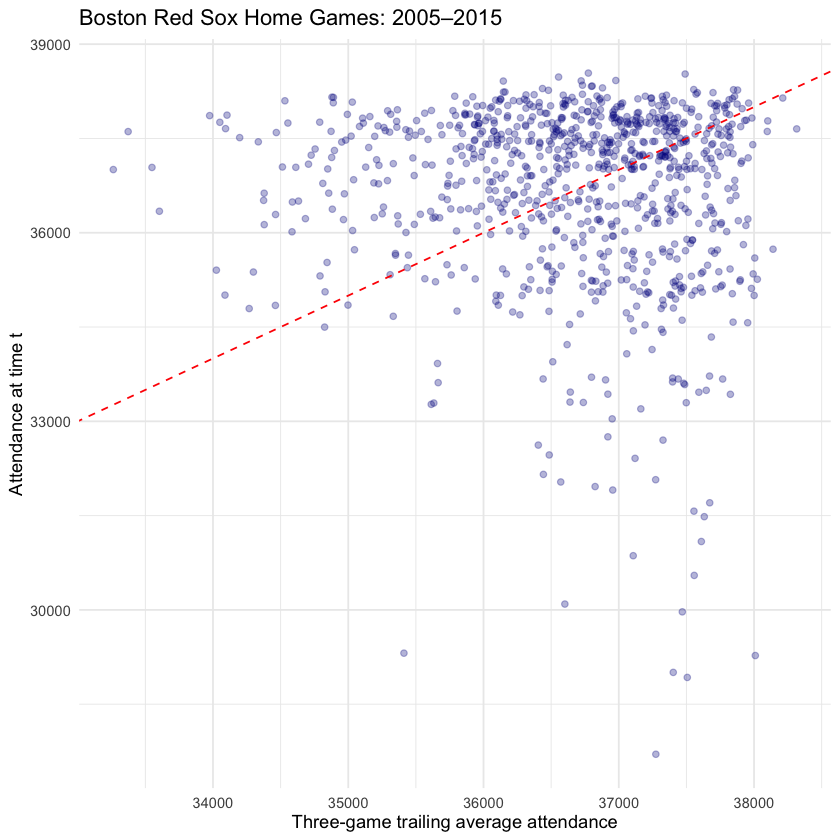
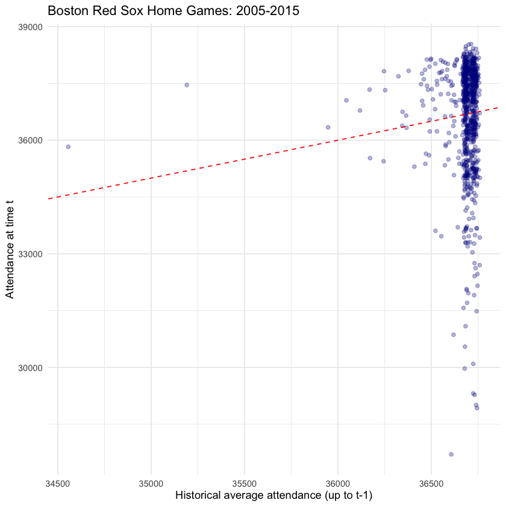

Topic 8.2 - 预测分析的方法¶
1. 预测案例背景与数据准备¶
(1) 案例背景¶
本章我们以美国大联盟棒球（MLB）为案例来展示这些想法
-
体育场需要预测每场比赛的上座人数，以便为销售食品和饮料的摊位安排员工
- 员工太少：服务变慢，排队变长
- 员工太多：人工成本激增
-
上座人数取决于很多因素，例如：星期几、天气状况、对手实力、促销活动等
-
一旦上座人数被预测出来，管理者就可以估算每小时有多少顾客光顾摊位，并据此分配员工
首先，我们导入本章需要用到的所有包：
library(tidyverse)
library(lubridate) # 日期解析和处理
library(slider) # 滑动窗口函数（如移动平均）
library(ggokabeito) # 色盲友好调色板
library(janitor) # 数据清洗工具
(2) 数据准备¶
接下来，我们导入本章需要的数据：
bos_2005_2015_fenway <- read_csv("mlb_attendance.csv")
bos_2005_2015_fenway |> slice_head(n = 10)
| gm <dbl> | date <chr> | tm <chr> | home_away <chr> | opp <chr> | result <chr> | r <dbl> | ra <dbl> | inn <dbl> | record <chr> | rank <dbl> | gb <chr> | win <chr> | loss <chr> | save <chr> | time <time> | day_night <chr> | attendance <dbl> | c_li <dbl> | streak <dbl> | orig_scheduled <chr> | year <dbl> | ymd <chr> | game_num <dbl> | is_double_header <lgl> | dotw <chr> |
|----------|-------------------|----------|-----------------|-----------|--------------|---------|----------|-----------|--------------|------------|----------|-----------|------------|------------|-------------|-----------------|------------------|------------|--------------|----------------------|------------|-----------|----------------|------------------------|------------|
| 7 | Monday, Apr 11 | BOS | H | NYY | W | 8 | 1 | NA | 3-Apr | 4 | 2 | Wakefield | Mussina | NA | 02:49:00 | D | 33702 | 1.05 | 1 | NA | 2005 | 11/4/2005 | 1 | FALSE | Monday |
| 8 | Wednesday, Apr 13 | BOS | H | NYY | L | 2 | 5 | NA | 3-May | 4 | 2.5 | Wright | Schilling | Rivera | 03:08:00 | N | 35115 | 1.07 | -1 | NA | 2005 | 13/4/2005 | 1 | FALSE | Wednesday |
| 9 | Thursday, Apr 14 | BOS | H | NYY | W | 8 | 5 | NA | 4-May | 3 | 2.5 | Foulke | Gordon | NA | 03:13:00 | N | 35251 | 0.98 | 1 | NA | 2005 | 14/4/2005 | 1 | FALSE | Thursday |
| 10 | Friday, Apr 15 | BOS | H | TBD | W | 10 | 0 | NA | 5-May | 3 | 1.5 | Wells | Nomo | NA | 02:48:00 | N | 35023 | 1.07 | 2 | NA | 2005 | 15/4/2005 | 1 | FALSE | Friday |
| 11 | Saturday, Apr 16 | BOS | H | TBD | W | 6 | 2 | NA | 6-May | 3 | 1.5 | Clement | Brazelton | NA | 02:48:00 | N | 35106 | 1.10 | 3 | NA | 2005 | 16/4/2005 | 1 | FALSE | Saturday |
| 12 | Sunday, Apr 17 | BOS | H | TBD | W | 3 | 1 | NA | 7-May | 3 | 1 | Wakefield | Kazmir | Foulke | 02:35:00 | D | 35232 | 1.12 | 4 | NA | 2005 | 17/4/2005 | 1 | FALSE | Sunday |
| 13 | Monday, Apr 18 | BOS | H | TOR | W | 12 | 7 | NA | 8-May | 1 | Tied | Schilling | Bush | NA | 03:41:00 | D | 35243 | 1.25 | 5 | NA | 2005 | 18/4/2005 | 1 | FALSE | Monday |
| 14 | Tuesday, Apr 19 | BOS | H | TOR | L | 3 | 4 | NA | 8-Jun | 3 | 1 | Halladay | Foulke | Batista | 02:29:00 | N | 35598 | 1.28 | -1 | NA | 2005 | 19/4/2005 | 1 | FALSE | Tuesday |
| 20 | Monday, Apr 25 | BOS | H | BAL | L | 4 | 8 | NA | 11-Sep | 2 | 2 | Chen | Wells | NA | 03:18:00 | N | 35003 | 1.38 | -1 | NA | 2005 | 25/4/2005 | 1 | FALSE | Monday |
| 21 | Tuesday, Apr 26 | BOS | H | BAL | L | 8 | 11 | NA | 11-Oct | 2 | 3 | Julio | Foulke | Ryan | 04:03:00 | N | 35670 | 1.34 | -2 | NA | 2005 | 26/4/2005 | 1 | FALSE | Tuesday |
数据集包含了波士顿红袜队 2005–2015 年的全部主场比赛记录
- 每行对应一场比赛
- 变量包括日期、对手、主客场标识、得分、胜负记录、上座人数等
事实上，这个数据集已经是清洗和整理过的版本了，我们可以直接用于后续的预测分析
(3) 数据预览¶
在正式建模预测分析之前，我们可以先对上座人数进行一些基本的描述性统计分析：
mean_att <- mean(bos_2005_2015_fenway$attendance, na.rm = TRUE)
median_att <- median(bos_2005_2015_fenway$attendance, na.rm = TRUE)
bos_2005_2015_fenway |>
ggplot(aes(x = attendance)) +
geom_histogram(fill = "darkblue", color = "black", alpha = 0.7, bins = 30) +
labs(
title = "Red Sox Home Game Attendance (2005–2015)",
x = "Attendance",
y = "Frequency"
) +
theme_minimal() +
geom_vline(aes(xintercept = mean_att), color = "red", linetype = "dashed", size = 1) +
geom_vline(aes(xintercept = median_att), color = "red", linetype = "solid", size = 1)

从上座人数的直方图中，我们可以观察到：
- 上座人数紧密集中在 37,000 左右，均值和中位数均在此附近，波动不大
- 由于球场容量差不多就是 38,500 座，因此右尾受到压缩，表示经常出现满场，而左尾较长，反映偶尔有低需求比赛
- 实际上大多数结果落在 36,000 到 38,000 之间，低于约 33,000 的情况较少见
- 所以，对于预测来说，任务是将每场比赛定位在这个约 5,000 座的区间内，而非在一个宽泛的范围内猜测
- 因此，排班和备货应以该区间为目标，仅对冷清的日期做适度调整
2. 预测分析建模¶
(1) 一期滞后模型¶
预测任务最简单的就是直接使用目标变量上一期的数值，这就是一期滞后模型（Lag-1 Model）
-
也被称为持续性预测（Persistence Forecast）或朴素预测（Naive Forecast）
-
在上座任务的例子中，下一场比赛的上座人数，我们就使用上一场比赛的上座人数来预测
在 R 中，我们可以使用之前介绍的时间序列数据处理中的 lag() 函数来实现：
bos_2005_2015_fenway <-
bos_2005_2015_fenway |>
# 注意一定要按照日期排序，否则滞后值会错乱
arrange(ymd) |>
mutate(att_lag1 = lag(attendance, 1))
之后，我们可以使用一个散点图来可视化预测值与实际值之间的关系：
- X 轴就是预测值，就是上一场比赛的上座人数；Y 轴就是实际值，就是这一场比赛的上座人数
-
并且我们添加一条 45° 的参考线：
- 如果点在这条线上，说明预测完全准确
- 如果点在这条线的上方，说明模型低估了上座人数（实际上座人数 > 上一场上座人数）
- 如果点在这条线的下方，说明模型高估了上座人数（实际上座人数 < 上一场上座人数）
bos_2005_2015_fenway |>
ggplot(aes(x = att_lag1, y = attendance)) +
geom_point(color = "darkblue", alpha = 0.3) +
geom_abline(slope = 1, intercept = 0, linetype = "dashed", color = "red") +
labs(
x = "Attendance at game t-1",
y = "Attendance at game t",
title = "Boston Red Sox Home Games: 2005-2015"
) +
theme_minimal()

从这个图中我们可以观察到：
- 点紧密聚集在 45° 线附近，说明直接使用上一场比赛的上座人数来预测下一场比赛的上座人数，准确率还是挺高的
- 并且我们可以看到，点在 38,500 之外就没有点了，表明存在满场上限，这压缩了高预测值，限制了上行误差，也表明预测值应以容量为上限
- 一期滞后通常在短期预测中表现不错，但是应对临时冲击时表现会变差，比方说天气变化、特殊比赛、促销活动等，这些因素会导致需求突然增加或减少，而一期滞后模型无法捕捉到这些变化
(2) 移动平均模型¶
移动平均，指的是使用最近几期的平均需求来预测下一期：
- 例如，在上座人数的例子中，我们可以使用过去 3 场比赛的平均上座人数来预测下一场比赛的上座人数：
- 在 R 中，我们可以直接套用 3 个滞后值的平均来计算：
bos_2005_2015_fenway <-
bos_2005_2015_fenway |>
arrange(ymd) |>
mutate(
att_avg_lag3 = (lag(attendance) + lag(attendance, 2) + lag(attendance, 3)) / 3
)
之后，我们也可以使用同样的散点图来可视化这个模型的预测值与实际值之间的关系：
bos_2005_2015_fenway |>
ggplot(aes(x = att_avg_lag3, y = attendance)) +
geom_point(color = "darkblue", alpha = 0.3) +
geom_abline(slope = 1, intercept = 0, linetype = "dashed", color = "red") +
labs(
x = "Three-game trailing average attendance",
y = "Attendance at time t",
title = "Boston Red Sox Home Games: 2005–2015"
) +
theme_minimal()

从这个图中我们可以观察到：
- 点仍然紧密聚集在 45° 线附近，说明使用最近 3 场比赛的平均上座人数来预测下一场比赛的上座人数，准确率也不错
- 但是右下方的点相较于一期滞后模型来说变多了，说明移动平均模型会高估一些突然下降的比赛的上座人数，因为它会被之前几场比赛的高上座人数拉高平均值
- 同样地，移动平均模型也无法捕捉到临时冲击导致的需求变化，尤其是当冲击发生在最近几场比赛中的时候
(3) 历史累计均值模型¶
历史累计均值，指的是本期的预测，是从第一期到上一期，整个历史期间的目标变量的平均值：
- 在上座需求的例子中，就是使用从第一场比赛到上一场比赛，整个历史期间的平均需求来预测下一场比赛的需求：
-
这是一个缓慢变动的模型，代表长期均值的概念
-
在 R 中，我们可以使用
cummean()函数来计算累计平均值，注意这个函数不是 R 自带的，需要加载dplyr包，或者tidyverse包：
bos_2005_2015_fenway <-
bos_2005_2015_fenway |>
mutate(
att_historical_avg = lag(cummean(attendance))
)
之后，我们同样可以使用散点图来可视化这个模型的预测值与实际值之间的关系：
bos_2005_2015_fenway |>
ggplot(aes(x = att_historical_avg, y = attendance)) +
geom_point(color = "darkblue", alpha = 0.3) +
geom_abline(slope = 1, intercept = 0, linetype = "dashed", color = "red") +
labs(
x = "Historical average attendance (up to t–1)",
y = "Attendance at time t",
title = "Boston Red Sox Home Games: 2005–2015"
) +
theme_minimal()

从这个图中我们可以观察到：
- 点距离 45° 线更集中，但是还是有很多点分散在 45° 线的下方
- 说明使用历史累计均值来预测下一场比赛的上座人数，倾向于高估上座人数
- 事实上，如果历史太久远了，这个模型就会变得非常迟钝，无法反映近期的趋势和变化